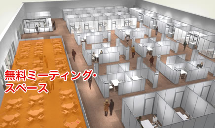

ビジネスデイ：2014.9.18［Thu］19［Fri］ 一般公開：2014.9.20［Sat］21［Sun］ 会場：幕張メッセ
出展以外のサービス
日・英対応ビジネスマッチングシステム

出展社とビジネスデイ来場者、もしくは出展社同士が事前にアポイントを設定して、商談を実現するためのマッチングシステム「アジア・ビジネス・ゲートウェイ」を8月から稼働します。
商談相手の検索、アポイントメント、商談案件の連絡、ビジネスミーティングエリアの予約まで、ＰＣやスマートフォンで操作できます。
- ■システムの流れ
- ■東京ゲームショウ2013 ビジネスマッチングシステム利用実績
- ・登録社数：523社
・事前商談申込件数：1,325件
・マッチング確定件数：555件
ビジネスミーティングエリア（フリースペース）

出展社向けに、静かな環境で商談ができる無料のミーティングスペースを用意しています。
ビジネスマッチングシステムで、商談を確定した後、ミーティングテーブル（無料）を予約することができます。
- ■東京ゲームショウ2013
ビジネスミーティングエリア利用実績 -
・商談件数：397件 （うち国際商談件数：328件）
・利用企業国・地域：33カ国・地域 （日本を含む）
アイルランド イスラエル インド インドネシア 英国 オランダ
カナダ 韓国 カンボジア シンガポール スイス スペイン タイ
台湾 中国 ドイツ 日本 フィリピン フィンランド フランス
ブラジル ブルネイ 米国 ベトナム ベラルーシ ポーランド 香港
マカオ マレーシア ミャンマー メキシコ ルクセンブルク ロシア
国際ビジネス相談コーナー
国際的なビジネスをする際に、必要な知識やノウハウ、サービスなどを無料で相談できるコーナーを会場内に設置します。同コーナーには、日本企業の海外進出を支援する日本貿易振興機構（ＪＥＴＲＯ）や国内外向けの広報サービスを担当するビジネスワイヤのスタッフ、人材供給についてコンサルティングするスタッフなどが常駐してします。